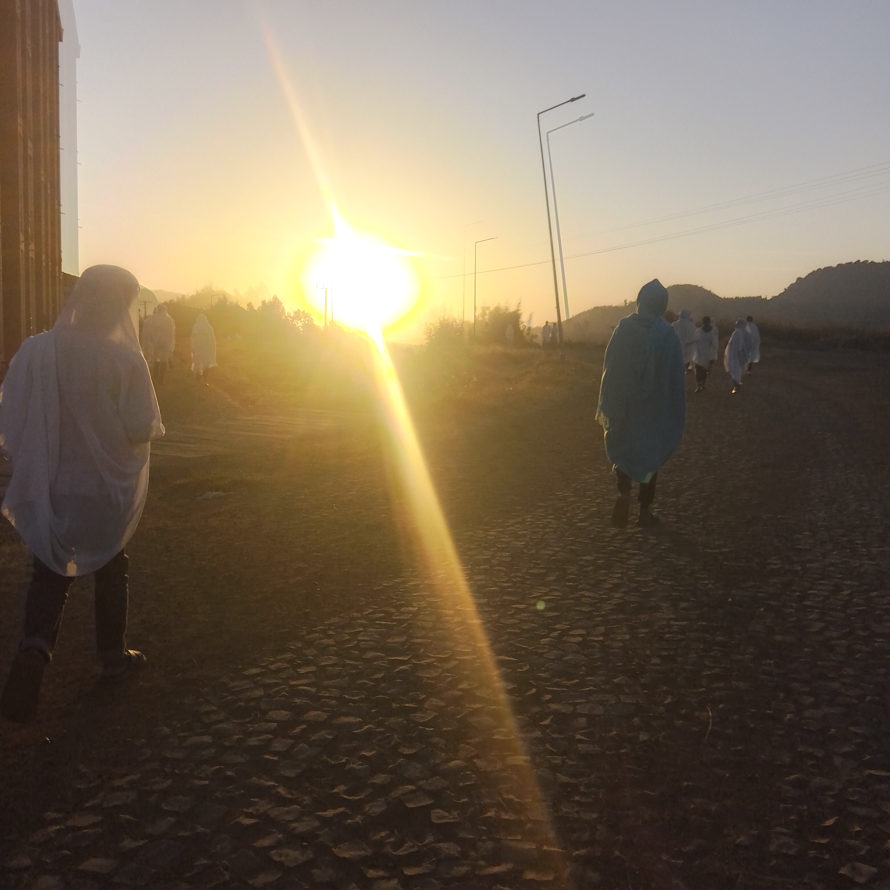
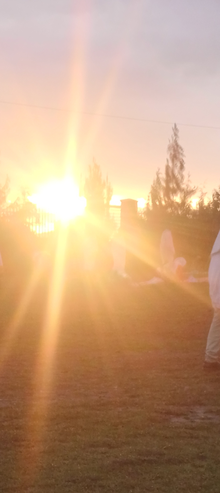
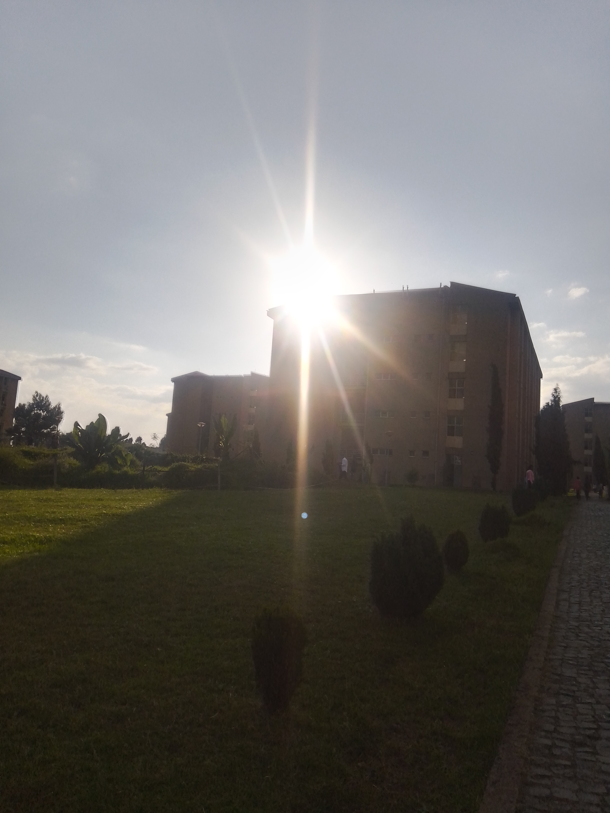
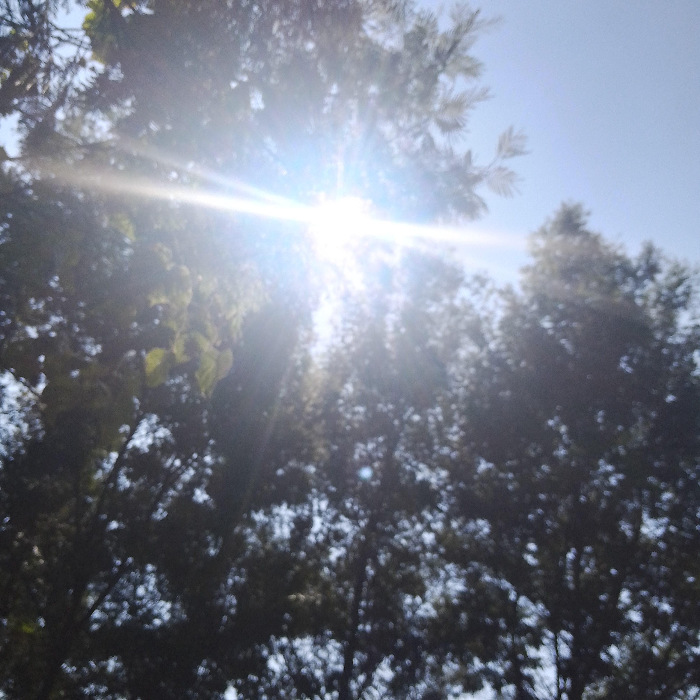

Things I Enjoy
Hobbies are an important part of my life. They help me relax, develop creativity, gain knowledge, and enjoy my free time. Here are some activities I enjoy.
1. Learning Technology
I enjoy exploring computer technology, programming, and new software tools. Learning technology helps me improve my knowledge as a Software Engineering student.
2. Reading and Learning
I enjoy gaining knowledge and discovering useful ideas that support my personal, academic, and professional development.
3. Listening to Mezmur and Songs
Listening to Mezmur and songs is one of my favorite activities during my free time. Music helps me relax and enjoy peaceful moments.
4. Spending Time with Family
I value spending meaningful time with my family and the people who are important in my life. These moments create beautiful memories.
5. Taking Pictures of the Sun
I enjoy photographing the beautiful sun and natural scenery during different times of the day, especially morning, afternoon, and evening.
My Favorite Sun Photos




My Favorite Activities
My hobbies make my free time enjoyable and meaningful.